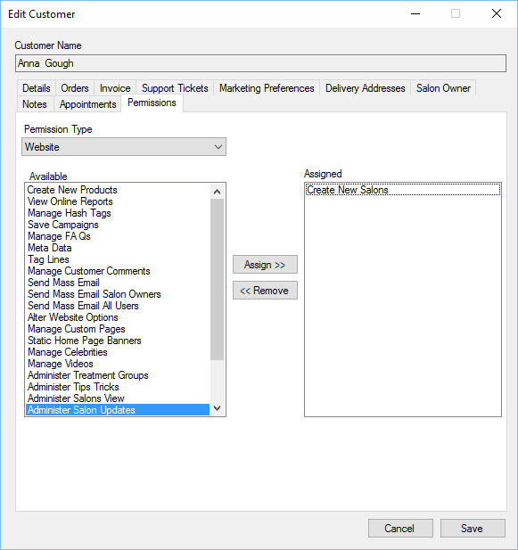

Salon owners, like distributors need permission to perform certain tasks within the website,
like editing their own salon details.

To assign a permission either double click the permission from the Available list, or highlight
the required permission and click “Assign”.
To remove a permission for a staff member, either double click the assigned permission or
highlight the assigned permission and click “Remove”.
See Staff, Permissions section for more details on types of permissions.